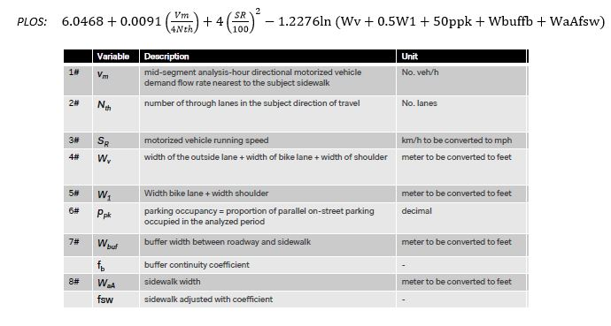
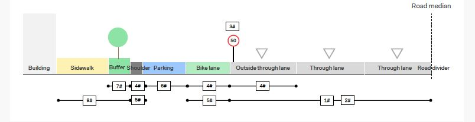

Pedestrian Level of Service
The Pedestrian Level of service (PLOS) model is aimed exactly at assessing the quality of the pedestrian infrastructure, allowing city planners to be aware of the current status of the walking conditions on road and street corridors.
The PLOS is a qualitative measure of quality of the walkways and it leads to an objective and sound evaluations of pedestrians’ perception and response to roadway environment. The model focuses primarily on the characteristics of the road infrastructure, taking into account a number of parameters, such as width of sidewalk, number of vehicular lanes, traffic volume and traffic speed, presence of buffers or bike lanes etc., and it returns a numerical value that summarizes the overall quality of the pedestrian infrastructure, the lower the output value the better quality of the infrastructure.
Enhanced Pedestrian Level of Service (EPLOS) includes some improvements on the model such as presence of lightnings, public services, curb ramps etc. on the point of interest. This enhancement on the model can show us the importance of having these features on the quality of pedestrian life.
| Grade | Description | Range |
|---|---|---|
| A | Highly pedestrian oriented environment, ample sidewalk space. | ≤ 2 |
| B | Streets with many pedestrian safety and comfort features. | >2 and ≤2.75 |
| C | Standard sidewalk, some deficiencies in pedestrian facility design and/or higher vehicle traffic. | >2.75 and ≤3.5 |
| D | Streets adequate for pedestrian use but has frequent deficiencies for width and clearance. | >3.5 and ≤4.25 |
| E | Streets inadequate for pedestrian use, high level of interaction with traffic. | >4.25 and ≤5 |
| F | Extremely car oriented environment, roads preliminary designed for high volumes traffic. | >5 |
How to calculate the numerical values of PLOS and EPLOS?


EPLOS calculation
EPLOS calculation
The EPLOS is calculated by using the PLOS and a separated calculation related to the added parameters (pedestrian crossings, point of interest, public transport stops, public services, curb ramps and lighting);
*For each parameter use 0 if not present, 0.125 if present;
*Subtract all parameters to the PLOS (maximum 0.75, minimum 0).